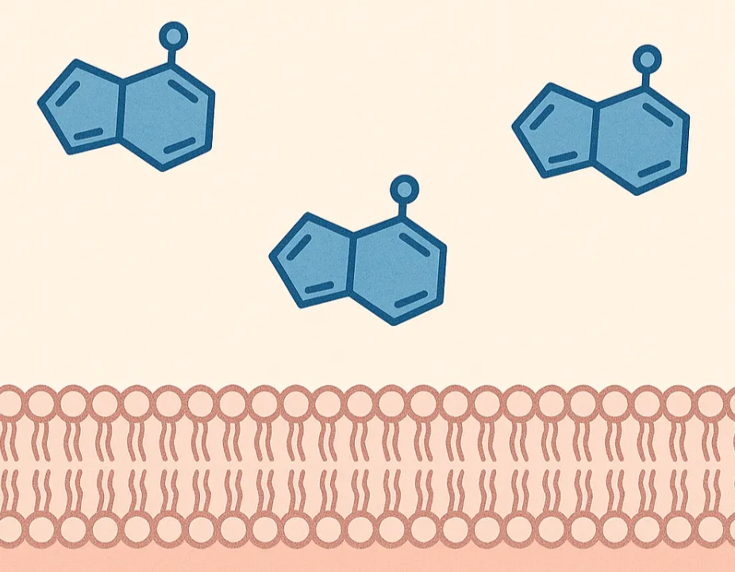

The science of staying awake
Over the last 24 years, I have consumed a LOT of caffeine. But I never really did any research into what it is, how we know what we know about it and just generally found myself very undereducated on what it is. So here's a deep dive into humanity's most successful affair with a plant compound.
The alertness economy
This is Thak.

Thak is a regular prehistoric guy who relies on hunting and gathering for his survival. At night, while his clan sleeps, Thak takes his turn keeping watch. But staying awake is hard. His eyes droop, his mind wanders – generally, not good for survival in Thak's world.
The concept of an "alertness economy" started with people like Thak. When survival depends on staying awake to detect predators or track nocturnal prey, combating fatigue is life-or-death.
Different regions developed their own solutions to combat fatigue. South Americans chewed coca leaves, East Asians used ephedra, and East Africans relied on khat. Each culture independently found plants that gave them cognitive edges when they needed them most.
Sleep regulation
In order to understand how you stay awake, we need to start at your brain's natural sleep-regulation system. Sleep regulation in your body relies on two big things: a compound called adenosine, and protein molecules known as adenosine receptors. Adenosine receptors line your cell membranes, while adenosine molecules are just floating around in your body.
The cells in your body use adenosine tri-phosphate (ATP) molecules for energy. Each time your cells use ATP for energy, they release adenosine into your system as a by-product of that process.
Receptors are a cell's way of listening to the world around it. Think of them as sensors in the cell membrane, whose sole purpose is to recognize when specific messengers—proteins, molecules, drugs—come knocking. Cells can have many many different types of receptors, but adenosine receptors are specifically configured to detect adenosine. When an adenosine molecule fits into an adenosine receptor, it's like pressing a doorbell, triggering a chain of events inside the cell that changes its behavior. We'll dive into some of these behavioral changes in the next section.
The harder your brain works, the more adenosine accumulates. This adenosine gradually binds to certain receptors in your brain and sends what's essentially a "I'm sleepy" signal to your brain.
Binding at a molecular level
Adenosine receptors work hand in hand with proteins known as G-proteins.1 G-proteins are a cell's message relay team that hang out next to the inner portion of the receptor, waiting to be activated. Before activation, a G-protein exists as a single unit made up of three protein subunits: one alpha (α) subunit, one beta (β) subunit, one gamma (γ) subunit.

When adenosine settles into the adenosine receptor, it triggers a shape change (known as "conformational change"). This shape change activates the G-proteins attached to the receptor's inner portion, causing them to split into two parts: 1) an alpha subunit, and 2) a beta-gamma complex. These two parts then zoom off to interact with other cellular proteins, starting a domino effect that magnifies the initial signal.

As a result of this signal, neural activity slows, blood vessels dilate, and your brain's arousal systems power down. As adenosine builds up during your waking hours, it essentially acts as a neurochemical marker of mental fatigue. This mechanism evolved as a brilliant self-regulating mechanism that ensures we get adequate rest.
1 Adenosine receptors are what's known as G-protein coupled receptors (GPCRs) because of their mechanism of working hand-in-hand with G-proteins. Structurally, GCPRs snake across the cell membrane seven times in order to create the perfect pocket for adenosine to bind. Why 7?
Caffeine
People had observed for centuries that certain plants like tea and coffee could help them mitigate the adverse effects of adenosine. The 1800s brought about a movement focused on identifying the "active principles" in these plants. When caffeine was isolated from coffee beans in 1821. Unlike other stimulants, caffeine offered a nearly perfect balance: strong enough to be effective, mild enough to use daily, and compatible with work rather than disrupting it.
The magic of caffeine lies in its structure. Here's caffeine and adenosine, side by side. See if anything sticks out.

Notice how the double ring structure of caffeine is quite similar to the double ring structure protruding from the adenosine molecule. Due to the similarity in shapes, caffeine can bind to adenosine receptors in the same spot, which allows it to compete with adenosine. But unlike adenosine, when caffeine settles into adenosine receptors, it doesn't send the "sleepy" signal. Instead, it just blocks adenosine from delivering the signal.2

2 Caffeine is what's called a "competitive antagonist" for adenosine.
Why Your Caffeine Experience Is Unique
I'm willing to wager that you know people that can pound an espresso at 8 PM and sleep like a baby, and also people who stay up all night after a cup of coffee at noon. This section will dig deeper into the processes that make it so.
Caffeine gets absorbed through your digestive tract very quickly—reaching peak levels in just 30-60 minutes. Once in your bloodstream, it travels everywhere, crossing the blood-brain barrier with ease (which is why it affects your brain so efficiently).
The caffeine in your body needs to get broken down eventually. Your body relies primarily on an enzyme called CYP1A2 to accomplish this. CYP1A2 functions incredibly efficiently for some people, and leisurely for others — making you either a "fast metabolizer" or "slow metabolizer" when it comes to caffeine. As with many other things, this difference is largely genetic. That said, a practical number to understand is caffeine's half-life—the time it takes your body to eliminate half of the caffeine you've consumed.
Here's a counterintuitive hack: drinking a cup of coffee and immediately taking a 20-minute nap works wonders. Since caffeine takes about 20-30 minutes to kick in, you wake up just as it reaches peak effectiveness. Meanwhile, your nap has cleared some adenosine from those receptors, creating a double whammy of alertness when you wake.
Engineering the Next Generation of Stimulants
While we love the enhanced mental clarity and less fatigue that caffeine provides, we hate the jitters and sleep disruptions. So what does it mean to engineer the next generation of stimulants? The frontier of improvement is to develop a compound that can deliver sustained energy without anxiety, focus without a crash, and better performance without building tolerance.
Two promising directions are either replacing or complementing caffeine. Theacrine and Dynamine have emerged as frontrunners to replace caffeine. Studies suggest that Theacrine works longer without a harsh comedown and doesn't deliver a crash, whereas Dynamine hits faster but doesn't last as long. Some pair caffeine with L-theanine (found naturally in tea) to edge off the jitters while preserving the alertness.
I hope we succeed in finding a single miracle molecule. If you or someone you know has any information on this, I would love to chat. But until that happens, it seems like we are headed in the direction of developing stimulant stacks — a different stimulant based on whether you need a short burst of energy, sustained focus, or physical performance without sacrificing sleep.